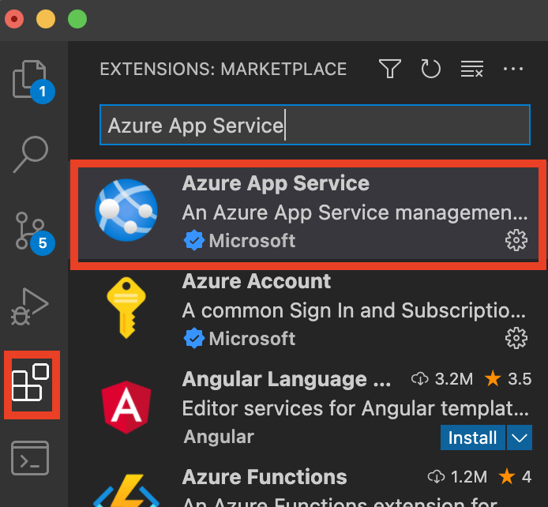

Cloud (2)
In this part, we will talk about how to deploy your website on Azure.
Create a Web App
To complete the steps in this article, you must have applied for Azure Students successfully.
- Step 1: Click the
App Serviceson the portal page:
- Step 2(a): Fill in the project details.
You have to create a new Resource Group[1] when it is the first time by clicking Create New:

- Step 2(b): Fill in the instance details. You can input any name you like as long as there is no conflict[2]. In the writing of this article, we use the name
swufe.
Other settings: Publish (Code); Runtime stack (Java 11); Java web server stack (Apache Tomcat 9.0); Operating System (Linux). As for Regions, you can select an arbitrary one, but for the sake of Network performance, an East Asia region (e.g., Japan, Korea) would be preferred.
After that, it is fine to always click Next for Deployment, Networking, Monitoring, Tags and use the default values. Finally, click the Create button in the Review + Create tab.
If all goes well, you will see Your deployment is complete:
And you can also visit the default website through the URL as shown under the Overview tab of this newly created resource.
Deployment
In practice, you shall use git to deploy your website, and here we use Azure App Service extension in VS Code[3]. So please download and install it if it is on your own computer.
- Step 1: Install Azure App Service. Note that Azure Account and
Azure Resourceswill also be installed automatically.

- Step 2: Open a Java EE project in VS Code. Under
build | libs, right-click on the WAR file, and then clickDeploy to Web App. Then you will be asked to sign in via you account in Azure.

Repeat the process to click Deploy to Web App, and you will see the created App swufe, and your names should differ from it:

After that, you will be asked to configure the port, and you can use 80. Cool! Please have a coffee and wait until this deployment process is done:
Once the deployment is completed, it will print out the URL for your Web App. Click the link to open it in a browser, you can see the web app running on Azure!

Custom domain name
As we can see, the default URL is http://<appName>.azurewebsites.net/. For example, the URL of this example App is https://swufe.azurewebsites.net/. To flex yourself, you may configure your own custom domain name (e.g., google.com, apple.com.cn, bob.xyz). Curious readers can explore how to set it up.
[1] Resource Group is to help you manage and separate different resources (including apps, networks) in Azure so that you are able to assign then the same permissions.
[2] The name here will be part of the URL (http://<appName>.azurewebsites.net/).
[3] This article is adapted from Java Web Apps with Visual Studio Code. There is also a plugin for IntelliJ IDEA, but it seems that it has some bugs.